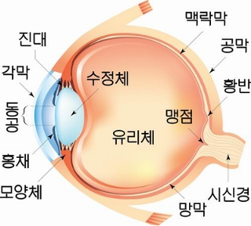

자극 : 빛과 같이 생물에 작용하여 특정한 반응을 일으키는 환경의 변화
감각 기관 : 자극을 받아들이는 기관
(사람의 감각 기관은 빛, 소리, 화학물질 등 특정한 종류의 자극을 받아들임)
시각 : 눈을 통해 밝은 곳에서 물체의 형태, 크기, 색깔, 거리등을 구별할 수 있게 해주는 것
눈
-성인의 눈은 탁구공만 한 크기이다.
-각막 : 홍채의 바깥을 싸는 투명한 막이다.
-홍채 : 눈으로 들어오는 빛의 양을 조절한다.
-동공 : 눈 안쪽으로 빛이 들어가는 구멍이다.
-수정체 : 볼록 렌즈와 같이 빛을 굴절시켜 망막에 상이 맺히게 한다.
-섬모체 : 수정체의 두께를 조절한다.
-공막 : 눈의 가장 바깥을 싸고 있는 막으로, 흰자위에 해당한다.
-맥락막 : 검은색 색소가 있어 눈 속을 어둡게 한다.
-유리체 : 눈 속을 채우고 있는 투명한 물질로 눈의 형태를 유지한다.
-망막 : 상이 맻히는 곳으로, 시각 세포가 있다.
-맹점 : 시각 신경이 모여 나가는 부분으로, 시각 세포가 있어 상이 맺히더라도 볼 수 없다.
-시각 신경 : 시각 세포의 자극을 뇌로 전달한다.
빛 자극이 뇌로 전달되어 물체을 보는 과정
빛 → 각막 → 동공 → 수정체 → 유리체 → 망막의 시각세포 → 시각 신경 → 뇌
눈은 빛의 밝기에 따라 동공의 크기를 변화 시켜 눈 속으로 들어오는 양을 조절한다.
물체와의 거리에 따라 수정체의 두께를 변화시켜 상이 망막에 또렷이 맻히도록 조절한다.
눈의 조절 작용
- 명암 조절
# 어두운 곳 : 홍채 축소, 동공 커짐, 빛의 양 많아짐
# 밝은 곳 : 홍채 확대, 동공 작아짐, 빛의 양 줄어듬
- 원근 조절
# 가까운 곳 : 섬모체 수축, 수정체 두꺼워짐
# 먼 곳 : 섬모체 이완, 수정체 얇아짐
눈 vs 사진기
- 빛 차단 : 눈꺼풀 vs 셔터
- 빛 굴절 : 수정체 vs 볼록 렌즈
- 빛의 양 조절 : 홍채 vs 조리개
- 상이 맺힘 : 망막 vs 디지털 센서(CCD)
- 내부를 어둡게(암실 역할) : 맥락막 vs 어둠상자